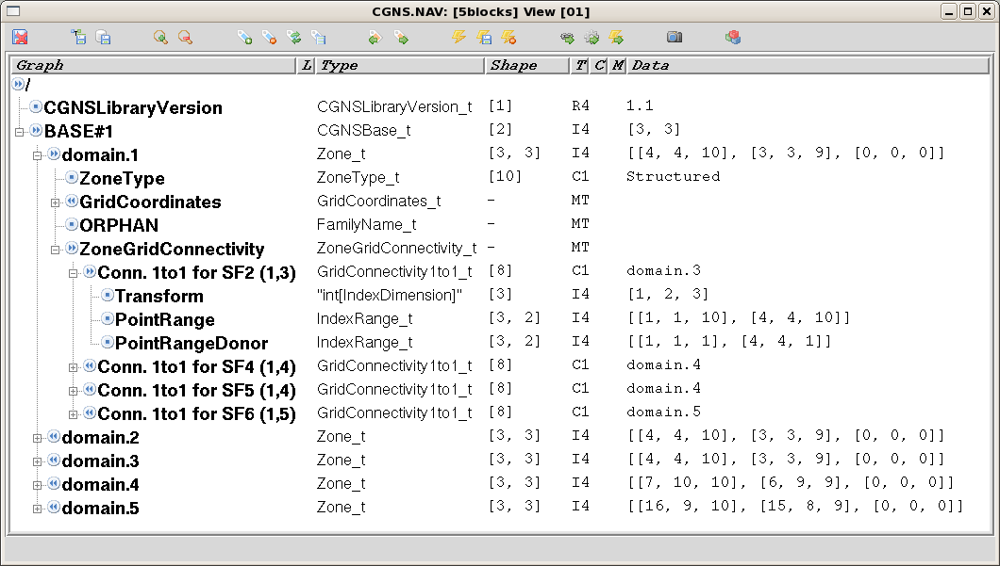
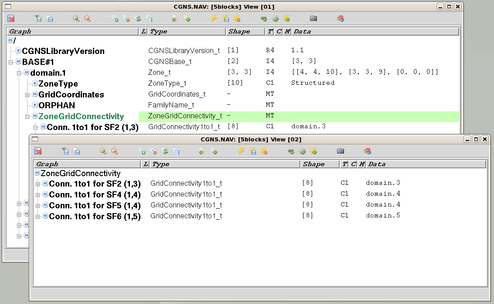
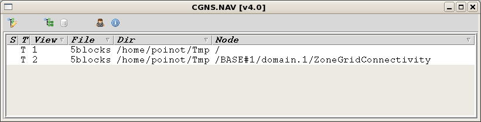

Tree View¶
The first window CGNS.NAV opens when you read a CGNS file is the
Tree view. This is you main view of the tree, the browsing or modification
of your tree has to be performed in this view or in a sub-window created
from this view.
The Tree view shows you the tree of nodes in a table-like way, you can see at the same time many informations on a complete sub-tree.
{kind=link}
A Tree view can be a view of a sub-tree of your current view. Select the top node you want as sub-tree root, press <Control-W> and the new window appears (see [1]).
{kind=link}
You can track with the Control view wich window you have on which node. To find back the Control view when you are in a Tree view, press <BackSpace>.
{kind=link}
Note
The sub-tree window is another view of the same CGNS tree. If you change something in one window, all existing windows displaying the same tree are updated.
Selection and flags¶
Copy/Paste¶
The Tree view support the Cut/Copy/Paste on trees. You can copy a sub-tree in a view, paste it into another view (even a view that belongs to another CGNS tree). The usual key bindings are <Control-X> for Cut, <Control-C> for copy and <Control-V> for paste.
When you Cut/Copy, the selected node uses as the root node of your buffered tree. When you Paste, the selected node can act as the parent node of the new sub-tree (using <Control-Y>) or as the brother of your new sub-tree (usinf <Control-V> (see [2]).
Footnotes
| [1] | All key bindings can be customized, the bindings we give here are the default bindings. |
| [2] | A Cut or a Copy action puts the selected root node path
into a buffer. There is a single buffer for all CGNS.NAV, so
if you Cut or Copy several times only the last one is taken
into account. A Copy actually copies the sub-tree starting from
the path in the buffer, recursively up to the end of all branches.
The root node of the resulting copy is |